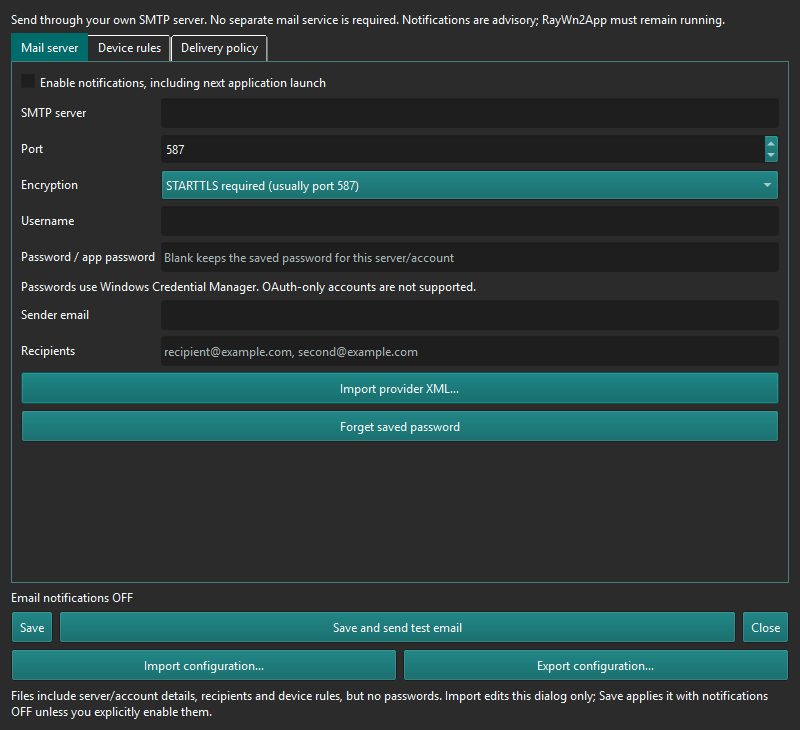
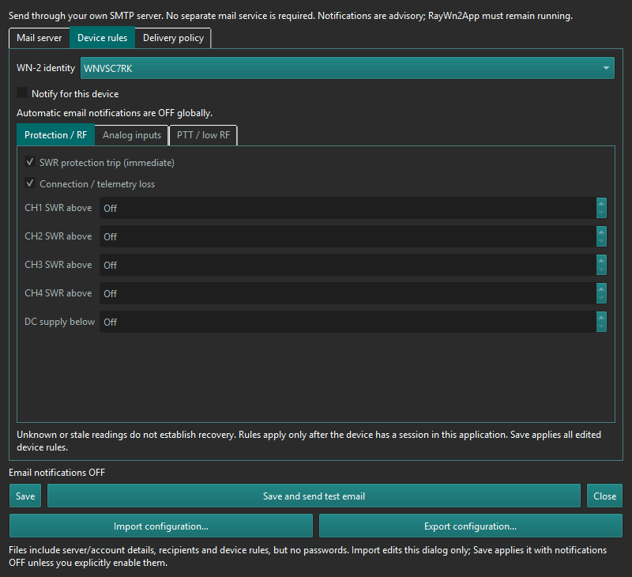
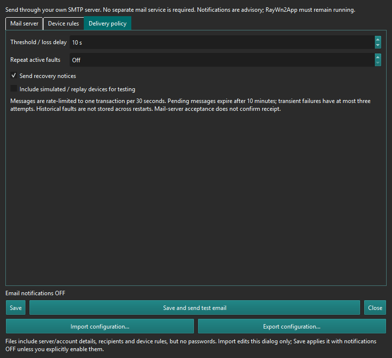

Email setup, rules and configuration transfer
On this page
- Open Email Notifications
- Mail server tab
- Test delivery first
- Device rules tab
- Delivery policy tab
- Move settings to another computer
- Missing alerts checklist
Open Email Notifications
Choose Device → Email Notifications. RayWn2App sends messages through the SMTP mail server you configure. It does not require a separate notification-service subscription. Keep the application running for monitoring and delivery.
Mail server tab
Enter the server, port, username, password/app password, sender email and recipients supplied by your mail provider. Select the required encrypted connection type. Common choices are STARTTLS on port 587 or TLS from connection start on port 465; follow your provider's instructions.

Mail server setup. Use your own provider's account details. Select image to enlarge.

Passwords are saved using your operating system's secure password storage. A blank password field reuses the saved password for the selected server/account. A different account needs its own password. Forget saved password removes the saved credential and stops monitoring until configured again. Some providers require an app password. Accounts that permit only browser-based OAuth sign-in are not supported by this setup. If delivery fails, check the provider's SMTP instructions and the reported error.
Test delivery first
Choose Save and send test email and check the recipient's mailbox, including junk mail. Server acceptance means the mail server accepted the message; it does not prove it reached the inbox.
Device rules tab
Select the WN-2 identity and check Notify for this device. Global email enable alone is not enough. Choose the required trip, connection, RF, analog or PTT/low-RF rules. Save after editing.

Select the device and enable its rules before expecting fault messages. Select image to enlarge.

An SWR protection-trip notice is immediate. An ordinary SWR-above-limit rule uses the configured delay. Trip messages include channel/SWR information when available; the application does not invent a channel when the hardware report does not identify it. Analog low/high rules use that device's configured analog value and units. They do not automatically use a Temperature instrument's °C/°F preference. Match the units deliberately. PTT-gated low-RF rules require a correctly configured digital PTT input and RF channel.
Delivery policy tab
Set the threshold/loss delay, optional repeat notices and recovery notices. For emulator practice, also enable simulated/replay devices; leave it off for ordinary physical-station monitoring if you do not want practice alerts.

Delays and repeats help control the number of messages. Select image to enlarge.

Messages are rate limited and temporary delivery failures have bounded retries. Old pending messages eventually expire. Invalid or stale readings do not establish recovery. Read the Application Log if an expected message does not arrive.
Move settings to another computer
JSON Export saves the email configuration without passwords. JSON Import loads a draft; review it, select the correct device identities and save deliberately. Imported notifications start disabled so importing a file does not unexpectedly activate mail. Thunderbird Autoconfig XML import can fill supported outgoing-mail settings from a provider's file. It does not configure your station's device rules or import a password. Review the chosen server, encryption, username and sender before saving.
Missing alerts checklist
Check global enable, Notify for this device, the selected rule and delay, the device identity, current valid readings and the simulator-test option where relevant. A successful test email proves the mail path, not that a particular device rule is enabled.
Help home · RF StateSide · RayWn2App operator guide